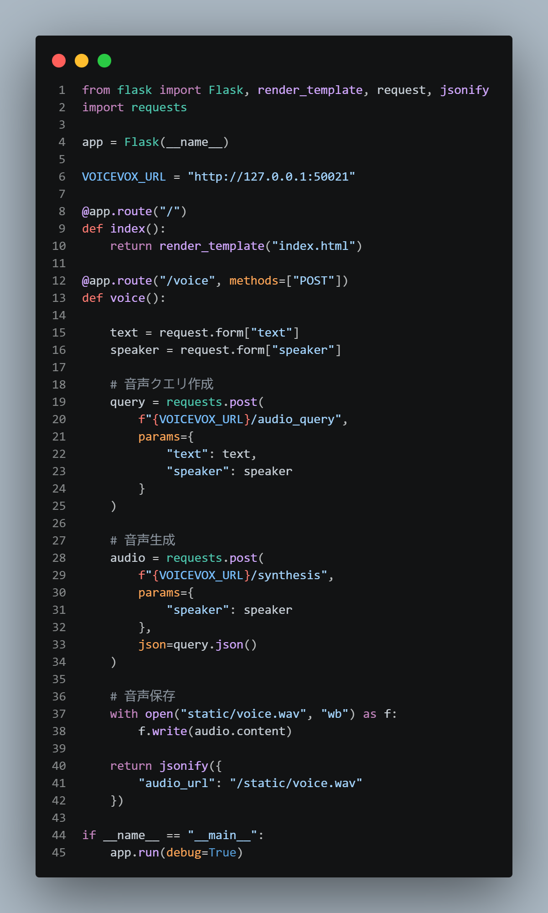

Flask
Flask
Flaskとは、小規模なwebアプリケーション向けのWebフレームワークである。必要最小限の機能で構成されているため柔軟なカスタマイズが可能であり、Webサイト制作や業務システム開発、API構築など幅広い用途で利用されている。また、Pythonの豊富なライブラリと連携しやすく、データ処理やAI技術を活用したアプリケーション開発にも適している。
DBとUI
UI（ユーザーインターフェース）は、ユーザーからの入力や操作を受け付け、その結果を画面上に表示する役割を持つ。一方、DB（データベース）は、アプリケーション内で扱う情報を保存・管理する役割を担っている。
ボイスアプリとつなげてブラウザで使えるようにしてみた
app

html

終わり